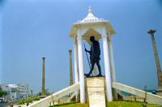
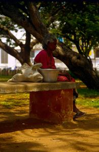

|
Vendredi 23 mars
Pondichery n'est pas une ville ou il y a des tonnes de monuments a voir. C'est
simplement une ville de taille moyenne, ou il fait bon se ballader. Enfin, c'est
une facon de parler, ici on ne peut pas dire qu'il fasse bon. On peut dire qu'il
fait tres chaud, que c'est la canicule, le cagnard, qu'on ne peut pas faire
un mouvement sans degouliner de transpiration. Oui, on peut dire tout cela.
La ville est composee de deux parties. La ville blanche, habitee a l'epoque
par les colonisateurs francais. Les maisons y sont jolies, entourees pour certaines
par des murets dissimulant de jolis jardins. C'est la qu'est "Le Cercle", un
club prive ou on trouve des terrains de badmington et de tennis. Les rues y
sont larges, propres, arborees, on se croirait vraiment quelque part en France.
La seconde partie est la ville noire, habitee par la population indienne. C'est
plus etroit, les maisons sont beaucoup moins jolies, il n'y a ni arbre ni jardin.
Mais c'est beaucoup plus anime aussi. La encore, comme pour le fort rouge d'Agra,
l'origine du nom reste une enigme: ville blanche, ville noire, pourquoi ces
termes???
Que ce soient les francais ou les anglais, les colonisateurs ont apporte pas
mal de choses positives. Ici en Inde, par exemple, les reseaux ferroviaires
et routiers sont un heritage anglais, tout comme l'est la seule langue commune
a tous les indiens. Mais la colonisation a ete faite par des gens animes par
de mauvaises motivations. Ils semblaient etre persuades de la suprematie de
la couleur de leur peau, de leur dieu, de leur facon de voir la vie. Ils vivaient
en Inde, mais pas avec les indiens. C'est comme ca que sont nes les "cantonments",
ces quartiers residentiels que l'on distingue aujourd'hui encore et qui etaient
reserves aux blancs. Certains lieux etaient interdits aux indiens, dans d'autres
ils etaient toleres mais uniquement revetus de vetements anglais et non de leurs
habits traditionnels... On comprend que tous ces peuples aient voulu leur independance.
Beaucoup des "progres" qui sont repartis avec leurs colonisateurs ne les concernaient
meme pas.
N'empeche que cela a quand meme du bon, on a trouve une boulangerie ou on a
deguste de la baguette, un succulent pain brioche sale garni de fromage et de
legumes et meme d'excellents pains au chocolat qu'on a pu tremper dans notre
tasse de chocolat au lait. Alors, cela ne valait-il pas quelques annes de colonisation,
messieurs les indiens? Ingrats va!
Samedi 24 mars
Pour commencer, Gingee, se prononce "Singi", autant dire qu'on a galere pour
denicher notre "bus to Ginge"! Mais ca valait le coup, on s'est fait des potes
dans le bus qui voulaient qu'on goute un baton de canne a sucre et des copines
qui trouvaient que, vraiment, avec mes deux pauvres petites boucles d'oerilles,
j'avais l'air de rien, qu'il me manquait une dizaine de bracelets, des colliers,
plein de bagues, 2 ou 3 paires de boucles d'oreilles bien grosses et d'enormes
boucles d'oreilles en forme de grosses fleurs dans... le nez! Sur place, pas
un seul touriste, nous etions l'attraction et on faisait rire tout le monde
avec nos shorts! Des enfants aux papies! Mais personne ne s'en est montre choque.
En plus, personne ne parlait un mot d'anglais... mais nombreux sont ceux qui
nous ont longuement explique plein de choses... en tamoul! On n'a toujours pas
compris le fond de la discussion. C'est pas grave, on a fait plein de gestes,
des yeux etonnes ou adopte l'air entendu quand ca nous semblait approprie et
on a tous bien ri! Belle ballade au marche de Gingee, dans la rue, a la campagne
autour de la ville, dans les rizieres.
Depuis qu'on est sur la cote Est de l'Inde, les vaches sont tres nombreuses
et fini la liberte. Elles sont souvent attachees ou gardees par des bergers
mais moins omnipresentes dans les rues. On croise meme d'enormes troupeaux de
20 ou 30 bovins avec leurs bergers. Idem pour les chevres. Ici, le regime est
plus carne que dans l'Ouest et le Sud. La region semble beaucoup plus fertile,
on y voit des cultures de: cocotiers, bananiers, citrons, mangues, patates,
tomates, riz, ble, cannes a sucre et d'autres qu'on ne connait pas.
Suite du voyage : Mahabalipuram
|

Inde
Pondichery
|

Inde
Pondichery
|
|
|